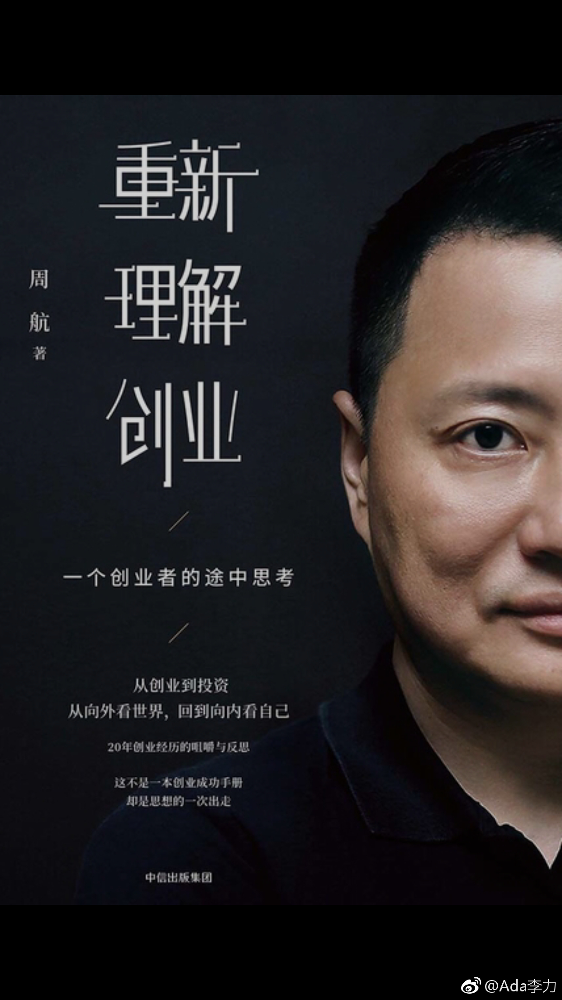

#读书# 《重新理解创业》这是一本非常有诚意的书，也非常难得。周航毕业后就在创业，易到用车创立时间比Uber还早几个月，但在共享出行这个赛道上，最终还是出局了。周航后来做投资人，从投资角度回顾创业，很多干货。
书里面提到时间感，互联网讲究快，之前风口时有人提出35岁实现财富自由的目标。但考虑到人的寿命在大幅增加，活到80很常见，未来120岁也可期，那么问题来了：35岁之后，你打算做什么。我尝试过所谓吃喝玩乐的生活方式，但说老实话，都没有工作好玩。
一想到还有四十多年可以挥霍，好像就不用那么着急了，想得更多的倒是：怎么保持头脑清醒，身体健康，把喜欢的事情做久些。
书里面提到时间感，互联网讲究快，之前风口时有人提出35岁实现财富自由的目标。但考虑到人的寿命在大幅增加，活到80很常见，未来120岁也可期，那么问题来了：35岁之后，你打算做什么。我尝试过所谓吃喝玩乐的生活方式，但说老实话，都没有工作好玩。
一想到还有四十多年可以挥霍，好像就不用那么着急了，想得更多的倒是：怎么保持头脑清醒，身体健康，把喜欢的事情做久些。
- 